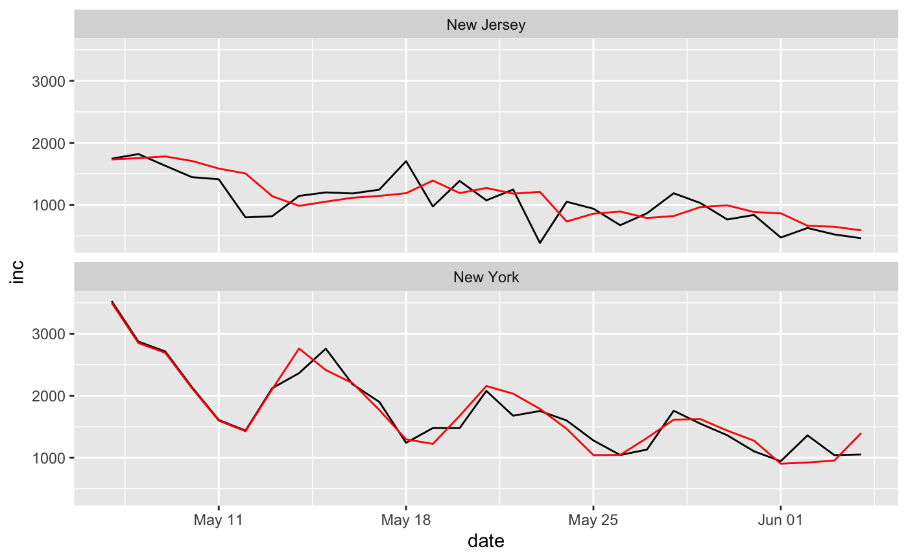

library(sars2pack) #> Loading required package: R0 #> Loading required package: MASS #> Loading required package: sf #> Linking to GEOS 3.7.2, GDAL 2.4.2, PROJ 5.2.0 #> Registered S3 method overwritten by 'quantmod': #> method from #> as.zoo.data.frame zoo library(tsibble) library(fable) #> Loading required package: fabletools library(ggplot2) library(dplyr) #> #> Attaching package: 'dplyr' #> The following object is masked from 'package:MASS': #> #> select #> The following objects are masked from 'package:stats': #> #> filter, lag #> The following objects are masked from 'package:base': #> #> intersect, setdiff, setequal, union
nyt = nytimes_state_data()
nyts = nyt %>% add_incidence_column(grouping_columns = c('state','fips','subset')) %>% ungroup() %>% tsibble::as_tsibble(key=c(-date,-count,-inc),index=date) #> Warning: `arrange_()` is deprecated as of dplyr 0.7.0. #> Please use `arrange()` instead. #> See vignette('programming') for more help #> This warning is displayed once every 8 hours. #> Call `lifecycle::last_warnings()` to see where this warning was generated. nyts = nyts %>% dplyr::filter(state %in% c('New York', 'New Jersey', 'Colorado', 'Maryland') & subset=='confirmed' & date>Sys.Date()-30)
Produce an ETS and an ARIMA model for each state.
fit = nyts %>% dplyr::select(-count) %>% filter(inc>20) %>% model( ets = fable::ETS(log10(inc)), arima = ARIMA(log10(inc)) )
Get a report of the ETS model for Colorado.
fit %>% filter(state=='Colorado') %>% select(ets) %>% report() #> Series: inc #> Model: ETS(A,N,A) #> Transformation: log10(.x) #> Smoothing parameters: #> alpha = 0.2411117 #> gamma = 0.0002253897 #> #> Initial states: #> l s1 s2 s3 s4 s5 s6 #> 2.556224 -0.0357663 -0.05298556 -0.2163486 -0.0544895 0.1759611 0.09727741 #> s7 #> 0.08635149 #> #> sigma^2: 0.0092 #> #> AIC AICc BIC #> -29.04807 -16.82585 -15.37511
Get a report of the ARIMA model for Colorado.
fit %>% filter(state=='Colorado') %>% select(arima) %>% report() #> Series: inc #> Model: ARIMA(0,0,0)(1,1,0)[7] #> Transformation: log10(.x) #> #> Coefficients: #> sar1 #> -0.5675 #> s.e. 0.1733 #> #> sigma^2 estimated as 0.01326: log likelihood=15.49 #> AIC=-26.98 AICc=-26.35 BIC=-24.8
fit %>% filter(state=='New York') %>% select(arima) %>% report() #> Series: inc #> Model: ARIMA(0,0,0)(1,1,0)[7] w/ drift #> Transformation: log10(.x) #> #> Coefficients: #> sar1 constant #> -0.5943 -0.1430 #> s.e. 0.1936 0.0158 #> #> sigma^2 estimated as 0.004578: log likelihood=27.57 #> AIC=-49.14 AICc=-47.8 BIC=-45.87
fit %>% filter(state=='New Jersey') %>% select(arima) %>% report() #> Series: inc #> Model: ARIMA(0,1,1) #> Transformation: log10(.x) #> #> Coefficients: #> ma1 #> -0.5610 #> s.e. 0.1698 #> #> sigma^2 estimated as 0.02199: log likelihood=14.03 #> AIC=-24.07 AICc=-23.59 BIC=-21.4
| state | .model | ME | RMSE | MAE | MPE | MAPE | MASE | ACF1 |
|---|---|---|---|---|---|---|---|---|
| New York | arima | -1.533193 | 188.14397 | 135.62962 | -0.5244709 | 8.955634 | 0.3391897 | -0.1348612 |
| New York | ets | 6.853138 | 188.53456 | 144.80642 | -0.6990162 | 8.821567 | 0.3621395 | -0.1422590 |
| New Jersey | ets | 32.428100 | 261.84771 | 194.40870 | -4.6302041 | 22.569205 | 0.5275677 | 0.1647046 |
| Colorado | ets | -8.285151 | 58.01379 | 43.55472 | -5.3197393 | 14.601461 | 0.5758436 | 0.0433067 |
| New Jersey | arima | -68.507250 | 295.78284 | 223.14506 | -16.2679044 | 28.632757 | 0.6055497 | -0.1005443 |
| Colorado | arima | -26.944921 | 67.63220 | 47.67055 | -12.0287018 | 17.541779 | 0.6302597 | 0.1936593 |
| Maryland | arima | 31.683653 | 258.23434 | 203.35651 | -3.3289595 | 21.517801 | 0.7451438 | 0.1450953 |
| Maryland | ets | 31.629589 | 258.23862 | 203.36541 | -3.3352606 | 21.520157 | 0.7451764 | 0.1450910 |
fit %>% dplyr::filter(state %in% c('Colorado','Maryland')) %>% dplyr::select(-ets) %>% augment() %>% ggplot(aes(x=date,y=inc)) + geom_line() + geom_line(aes(y=.fitted), color = 'red') + facet_wrap(~ state, nrow=2)

fit %>% dplyr::filter(state %in% c('New York','New Jersey')) %>% dplyr::select(-ets) %>% augment() %>% ggplot(aes(x=date,y=inc)) + geom_line() + geom_line(aes(y=.fitted), color = 'red') + facet_wrap(~ state, nrow=2)

fc = forecast(fit,h=7) autoplot(fc)